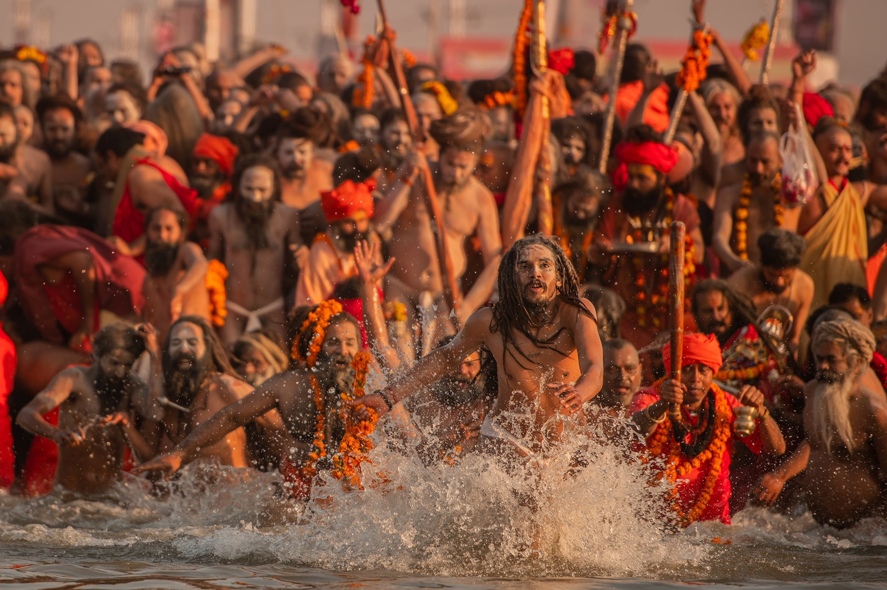

Uttar Pradesh
Prayag: The King of Tirthas
Welcome to Prayag (modern Prayagraj), the sacred Tirtha revered in the scriptures as *Tirtharaj*—the King of all Pilgrimage Centers. It is here that the three holiest rivers in Sanatana Dharma, the Ganga, Yamuna, and the mythical Saraswati, join in a holy confluence known as the Triveni Sangam. A pilgrimage to Prayag is considered one of the most meritorious acts a devotee can perform.
The Puranic Origin: The First Sacrifice
The *Puranas* narrate that after the creation of the universe, Lord Brahma, the Creator, performed the very first *Prakrishta Yajna* (excellent sacrifice) at this exact spot. The name "Prayag" is derived from this monumental event. This act sanctified the land for eternity, making it a focal point of cosmic energy and a place of immense spiritual power, attracting gods, sages, and humans alike.
Key Spiritual Experiences
The Holy Dip at Triveni Sangam: The most important ritual at Prayag is the holy bath at the Triveni Sangam. Pilgrims take a boat to the confluence point where the distinct colors of the Ganga and Yamuna can be seen merging. A dip here, where the invisible Saraswati also joins, is believed to wash away the sins of countless lifetimes and liberate one from the cycle of rebirth.
The Kumbh Mela: Prayag is one of the four sacred sites where the monumental Kumbh Mela takes place. Held every 12 years, it is the largest spiritual gathering on Earth. Witnessing the *Shahi Snan* (royal bath) of the Naga Sadhus and taking a dip during this auspicious time is an experience of unparalleled spiritual magnitude.
Akshayavat and Hanuman Temple: Within the Allahabad Fort lies the sacred and immortal banyan tree, the *Akshayavat*. It is believed that resting in its shade grants liberation. Nearby is a famous temple dedicated to a reclining form of Lord Hanuman, who is said to guard the sacred city.